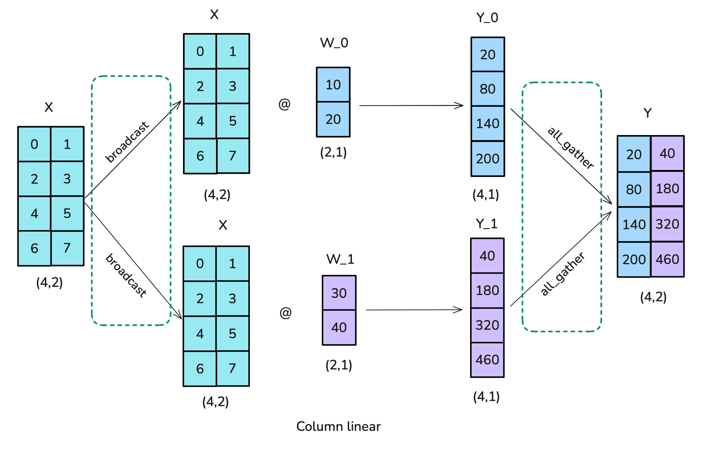

LLM parallelization schemes
Data parallelism (DP)

- Trivial to implement;
- Syncing overhead for training;
- Memory cost due to replication.
Overlapping in DP

- Overlapping reduces communication overhead.
Tensor parallelism


- Row vs. column version;
- Expensive communication.
Pipeline parallelism


- Training: bubbling problem;
- Combine with DP to for better performance;
Pipeline parallelism (cont.)

- More strategies exist;
- Balancing, bubble, memory and communication;
- Implement is not trivial.
Expert (MoE) parallelism

- Activate only subsets of experts per token;
- Reduces compute cost for huge models.